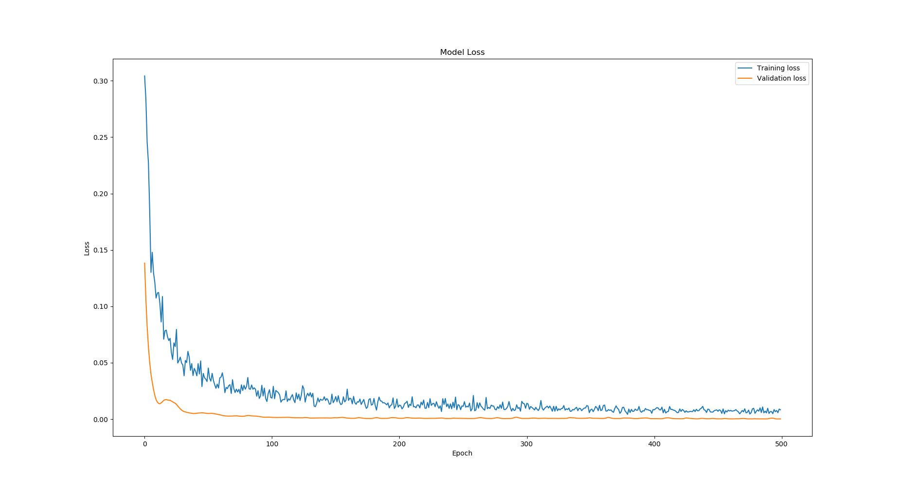
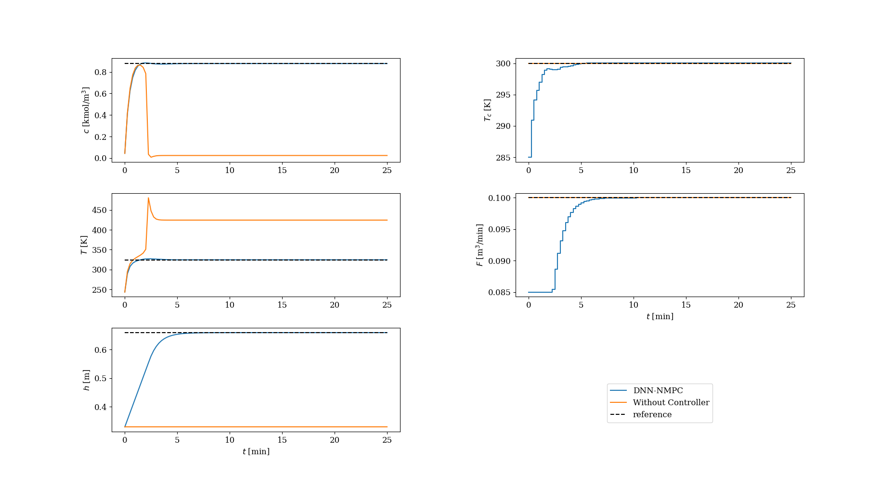

Deep Neural Network Nonlinear Model Predictive Control for CSTR#
Introduction#
The Continuous Stirred Tank Reactor (CSTR) is a fundamental model in chemical engineering, representing a reactor where the contents are well-mixed, ensuring uniform composition and temperature throughout. This report delves into the mathematical modeling of a CSTR, its simulation, and control using a Nonlinear Model Predictive Control (NMPC) strategy integrated with a neural network for predictive behavior.
CSTR Model#
The CSTR dynamics are governed by the mass and energy balance equations:
The reaction rate is:
Parameter |
Value Description |
|---|---|
Initial Flow Rate |
Initial volumetric flow rate |
Initial Temperature |
Initial temperature |
Initial Concentration |
Initial concentration |
Reactor Radius |
Reactor radius |
Reaction Rate Constant |
Reaction rate constant |
Activation Energy/Gas Const |
Activation energy/gas constant |
Heat Transfer Coefficient |
Overall heat transfer coefficient |
Density |
Density |
Specific Heat Capacity |
Specific heat capacity |
Heat of Reaction |
Heat of reaction |
Small Value |
Small value |
Mass Fractions |
Mass fractions |
Input Parameters |
Input parameters |
Parameter Equations#
Nonlinear Model Predictive Control (NMPC)#
NMPC optimizes control inputs over a prediction horizon to minimize deviations from desired setpoints while respecting constraints.
Parameters#
Cost Function#
Where:
Weights:
Constraints#
ACADOS Configuration#
Solver: SQP / SQP-RTI
Integrator: IRK
QP Solver: PARTIAL_CONDENSING_HPIPM
Condensing: Full (\(N\) intervals)
Regularization:
Neural Network Integration#
Data Preparation#
Gather time-series data: concentration, temperature, inflow, heat input
Scale input/output:
Neural Network Architecture#
Input: \( \mathbf{a}_0 = \mathbf{x} \)
Hidden layers:
Output:
Training#
Loss: Mean Squared Error
Optimizer: Adam or SGD
Validation: Prevent overfitting using a held-out validation set.
Results#


Conclusion#
The CSTR model, integrated with a neural network and controlled via NMPC, represents a sophisticated and powerful approach for managing complex chemical systems. This architecture allows for efficient real-time control and adaptation to dynamic operating conditions.